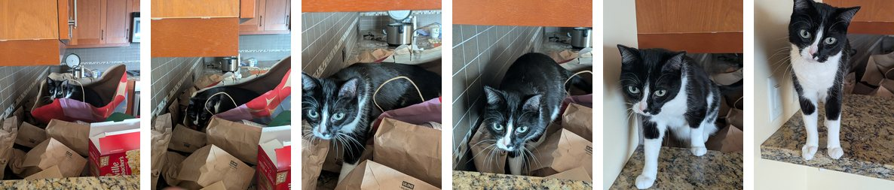
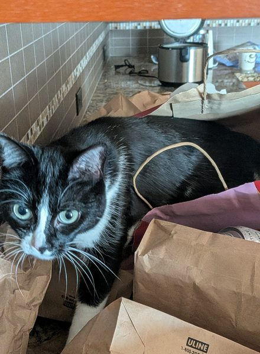
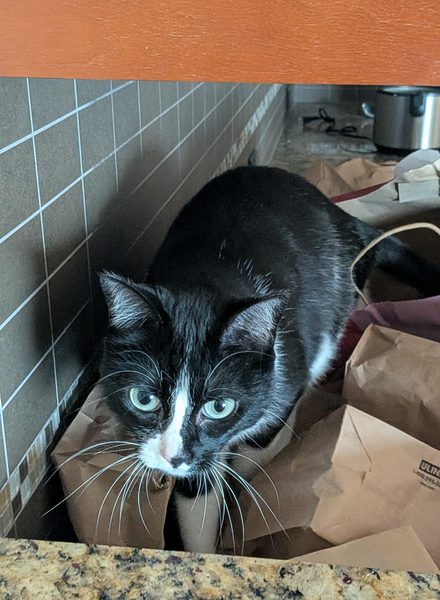

Computational Physical Modeling
Sampling a continuous signal
A film is 24 still photographs a second.
Six photographs of Angel leaving a bag.

Six frames over 9.513 seconds.
She left the bag in the gap between these two.


A film would have taken 37 frames in that gap.
One accelerometer on one crash test takes 12 500 frames a second.
One hertz is once per second, so 12 500 Hz is 12 500 samples a second.
Three curves through the same five samples.
Between two samples the curve may go anywhere.
Four samples, all of them below the peak.
So the true peak is at least the largest sample.
Computational Physical Modeling
Records and parameter sweeps
A record and a sweep are both finitely many evaluations of something continuous.
They differ in who chose the spacing.
Nine simulation runs, 19 to 21 seconds each.
The minimum strength that survives the shake lies between two neighboring runs.
Computational Physical Modeling
Decimating a crash record
Decimating a record is keeping every k-th sample.
The crossmember channel, peak 1540.4 m/s².
The peak holds at 1540 down to about 1250 Hz, then drops.
Decimation also chooses which of the k samples to keep.
Python and MATLAB both start at sample 0.
The same record, read from different starting samples.
| rate | k | from sample 0 | worst start | best start |
|---|---|---|---|---|
| 12 500 Hz | 1 | 1540.4 | 1540.4 | 1540.4 |
| 3125 Hz | 4 | 1540.4 | 1262.2 | 1540.4 |
| 1250 Hz | 10 | 1540.4 | 793.2 | 1540.4 |
| 500 Hz | 25 | 787.1 | 642.6 | 1540.4 |
| 250 Hz | 50 | 787.1 | 421.0 | 1540.4 |
| 100 Hz | 125 | 617.9 | 303.0 | 1540.4 |
At 250 Hz the answer lies between 421 and 1540 m/s².
Fifty starting offsets at 250 Hz, fifty different peaks.
One offset always lands on the peak, whatever the record.
Computational Physical Modeling
Aliasing and the anti-alias filter
A fast oscillation sampled too slowly reads as a slower one.
9 Hz, sampled ten times a second, traces 1 Hz.
Both curves pass through every one of these samples.
Two frequencies share samples when they sum to the sample rate.
Harry Nyquist, 1889–1976.
Born in Värmland, Sweden. Emigrated at eighteen. At AT&T from 1917 and Bell Labs from 1934.
Telegraph companies were paying for lines and wanted to push pulses down them faster. Push too fast and the pulses smear into each other. So how fast is too fast?
In 1928 he showed the answer depends only on the bandwidth of the line. A channel of bandwidth $B$ carries $2B$ distinguishable elements a second, and half the rate is the boundary that carries his name.
He did not state the sampling theorem. Shannon popularized that twenty years later.
In 1928 he showed a channel of bandwidth $B$ carries $2B$ signal elements a second.
The Nyquist frequency is half the sample rate, here 5 Hz.
Above it, each frequency shares its samples with a slower one.
Every sample is correct, and together they describe an oscillation that never happened.
A fold looks exactly like genuine slow content.
The header lists the sample rate and the filter cutoff.
Sampling at 12 500 Hz puts Nyquist at 6250 Hz.
8000 Hz folds about 6250 and lands at 4500 Hz.
The converter folds the signal as it samples.
So the filter removes the 8000 Hz before the converter can fold it.
The filter's capacitor takes time to charge.
At Nyquist, four poles leave 1% of the signal.
| frequency | f / fc | one pole | four poles |
|---|---|---|---|
| 2000 Hz | 1.0 | 0.71 | 0.71 |
| 6250 Hz | 3.1 | 0.31 | 0.010 |
| 8000 Hz | 4.0 | 0.24 | 0.0039 |
After sampling, folded and genuine content are the same numbers.
The fast content was removed on purpose, before any sample existed.
The record is accurate below the cutoff and empty above it.
Computational Physical Modeling
Sweeping for a resonance peak
A pump is bolted to a steel frame.
At its natural frequency, the frame moves far more than a steady push would.
Pushes that arrive in step accumulate.
Damping removes energy, and the motion settles where input and loss balance.
The spec requires an amplification of 15 or less.
We can evaluate the amplification at any one speed we choose.
One run of the frame, one number. Nothing tells us where to look.
18 evaluations find a largest amplification of 12.0, at 19 Hz.
Halve the step, and the largest value moves.
We can narrow the search.
Refined far enough, the band above the limit is 0.98 Hz wide.
Lower damping makes the peak taller and narrower at once.
A stepped-over answer and no answer at all produce the same curve.